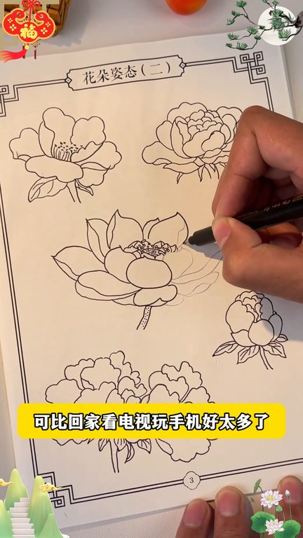
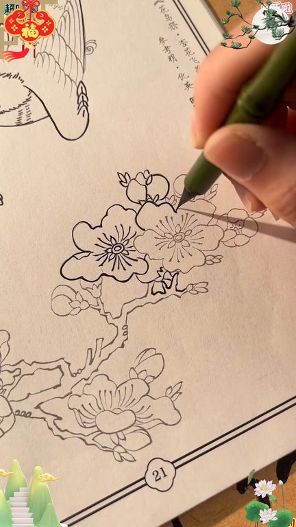
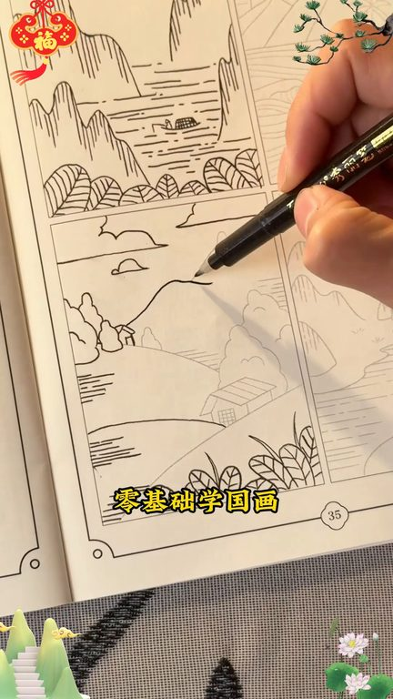

TOP 1 · 代表素材深度拆解
核心放量 稳健
视频为原始素材 HTTPS 链接；点击后加载，建议在网络环境良好时播放。
9.5万素材消耗
2.71%CTR
100.0%类目消耗占比
+0.00pp较类目均值
表现判断
该素材是类目内第 1 名，属于“核心放量”；CTR 高于类目均值。消耗体现承接规模，CTR 体现首屏与定向效率，两项应结合判断，不能仅以单指标下结论。
表达标签
口播三段式证据
开场钩子你买白苗礼膜本了?买了?59.9?赶紧退了。正版白苗礼膜本长这样。而且现在活动价直接买一套,单本只要七块八毛九。现在买一套还送绘画专用笔。终于等到图画本来活动了。
中段论证白苗画带来的满满成就感,特别回家看电视玩手机好太多了。家长能多带孩子试试吧。我特别支持我的孩子画画,他大概坚持了有七年的时间。孩子喜欢画画,他有三点好处。第一点就是他能够观察生活当中美好的细节。第二点就是他有一种表达方式。这种表达方式就是通过画画来把他对于生活当中很多小的细节,对于其他人的这种认知表达出来。那么第三一点就是他对于几何的图形啊,对于这种结构化的…
结尾转化没想到他现在每天都拿着表现勾画,手都稳了很多,现在写字也越来越好看了,画完还能涂色,孩子也能收获满满的成就感。总比在家看电视玩手机要好多了,一套五色主题丰富。零基础学国画,不报班,在家就能体验白描画的乐趣,真的很不错呀。
有效点
- CTR 2.71% 高于类目均值 2.71%，开场或人群指向具备点击优势
- 包含使用或实测表达，能够把抽象卖点转化为可感知证据
迭代动作
- 保留当前高效钩子，复制 3 个变量版本：人物、首句和首帧分别单变量测试
- 视频时长偏长，建议剪出 30–45 秒短版，仅保留钩子、两项证据和一次 CTA
- 促销口径与资质信息保持同屏可验证，结尾只保留一个明确行动指令
合规关注
钩子建立 · 5.6s

场景/问题展开 · 42.3s

卖点证据 · 97.3s

转化收口 · 133.9s
查看完整口播摘要
你买白苗礼膜本了?买了?59.9?赶紧退了。正版白苗礼膜本长这样。而且现在活动价直接买一套,单本只要七块八毛九。现在买一套还送绘画专用笔。终于等到图画本来活动了。孩子不喜欢练字,但喜欢画画,我就给他买了这个中国画白苗。本来只是想锻炼他的耐心和专注力,没想到他瞄了一段时间后连空笔都稳了很多。自己也变得公整了,苗娃还可以涂上自己喜欢的颜色。全套六本,进四百幅国风图案。孩子每天进下新来描上几幅,在家也能体验国画的乐趣。白苗画带来的满满成就感,特别回家看电视玩手机好太多了。家长能多带孩子试试吧。我特别支持我的孩子画画,他大概坚持了有七年的时间。孩子喜欢画画,他有三点好处。第一点就是他能够观察生活当中美好的细节。第二点就是他有一种表达方式。这种表达方式就是通过画画来把他对于生活当中很多小的细节,对于其他人的这种认知表达出来。那么第三一点就是他对于几何的图形啊,对于这种结构化的图形啊,他的认知能力特别强,这对于他以后的学习也是特别有帮助的。别人小朋友有的,你也有。本来是想着锻炼一下他的耐心专注力。没想到他现在每天都拿着表现勾画,手都稳了很多,现在写字也越来越好看了,画完还能涂色,孩子也能收获满满的成就感。总比在家看电视玩手机要好多了,一套五色主题丰富。零基础学国画,不报班,在家就能体验白描画的乐趣,真的很不错呀。